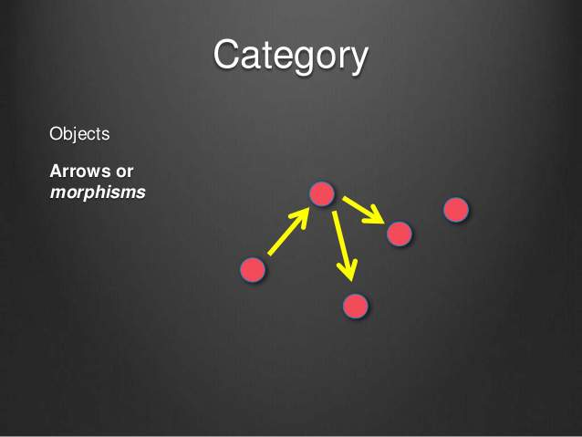

函数式编程特性
- 与面向对象编程（Object-oriented programming）和过程式编程（Procedural programming）并列的编程范式。
- 最主要的特征是，函数是第一等公民。
- 强调将计算过程分解成可复用的函数，典型例子就是map方法和reduce方法组合而成 MapReduce 算法。
- 只有纯的、没有副作用的函数，才是合格的函数。
范畴论
函数式编程的起源，是一门叫做范畴论（Category Theory）的数学分支。
“范畴就是使用箭头连接的物体。”

箭头表示范畴成员之间的关系，正式的名称叫做”态射”（morphism）。范畴论认为，同一个范畴的所有成员，就是不同状态的”变形”（transformation）。通过”态射”，一个成员可以变形成另一个成员。
- 数学模型
- 所有成员是一个集合
- 变形关系是函数
- 范畴与容器
- 值（value）
- 值的变形关系，也就是函数。
1 | class Person { |
纯函数
对于相同的输入，永远会得到相同的输出，而且没有任何可观察的副作用，也不依赖外部环境的状态的函数，叫做纯函数。
1 | var xs = [1,2,3,4,5];// Array.slice是纯函数，因为它没有副作用，对于固定的输入，输出总是固定的 |
函数式编程基本的运算
函数式编程主旨在于将复杂的函数符合成简单的函数（计算理论，或者递归论，或者拉姆达演算）。运算过程尽量写成一系列嵌套的函数调用，函数式编程有两个最基本的运算：合成和柯里化。
- 函数的合成
如果一个值要经过多个函数，才能变成另外一个值，就可以把所有中间步骤合并成一个函数，这叫做”函数的合成”（compose）。
1 | const compose = (f,g) => { |
- 柯里化
所谓”柯里化”，就是把一个多参数的函数，转化为单参数函数。
1 | // 柯里化之前 |
事实上柯里化是一种“预加载”函数的方法，通过传递较少的参数，得到一个已经记住了这些参数的新函数，某种意义上讲，这是一种对参数的“缓存”，是一种非常高效的编写函数的方法。
1 | const compose = (f, g) => (x => f(g(x))); |
- Point Free
把一些对象自带的方法转化成纯函数，不要命名转瞬即逝的中间变量。
1 | { |
- 声明式与命令式代码
函数式编程的一个明显的好处就是这种声明式的代码，对于无副作用的纯函数，我们完全可以不考虑函数内部是如何实现的，专注于编写业务代码。
1 | //命令式 |
核心概念
- 高阶函数
高阶函数，就是把函数当参数，把传入的函数做一个封装，然后返回这个封装函数,达到更高程度的抽象。
1 | //命令式 |
- 递归与尾递归
1 | // 不是尾递归，无法优化 |
函子
函子是函数式编程里面最重要的数据类型，也是基本的运算单位和功能单位。
它首先是一种范畴，也就是说，是一个容器，包含了值和变形关系。比较特殊的是，它的变形关系可以依次作用于每一个值，将当前容器变形成另一个容器。
- 函子的代码实现
任何具有map方法的数据结构，都可以当作函子的实现。
1 | class Functor { |
一般约定，函子的标志就是容器具有map方法。该方法将容器里面的每一个值，映射到另一个容器。
1 | (new Functor(2)).map(function (two) { |
of方法
函数式编程一般约定，函子有一个of方法，用来生成新得容器。
1 | class Functor { |
maybe函子
函子接受各种函数，处理容器内部的值。这里就有一个问题，容器内部的值可能是一个空值（比如null），而外部函数未必有处理空值的机制，如果传入空值，很可能就会出错。
Maybe 函子就是为了解决这一类问题而设计的。简单说，它的map方法里面设置了空值检查。
1 | class Functor { |
Either 函子
条件运算if…else是最常见的运算之一，函数式编程里面，使用 Either 函子表达。
Either 函子内部有两个值：左值（Left）和右值（Right）。右值是正常情况下使用的值，左值是右值不存在时使用的默认值。
1 | class Either extends Functor { |
ap 函子
ap 是 applicative（应用）的缩写。凡是部署了ap方法的函子，就是 ap 函子。ap 函子的意义在于，对于那些多参数的函数，就可以从多个容器之中取值，实现函子的链式操作。
1 | { |
IO函子
真正的程序总要去接触肮脏的世界。
1 | function readLocalStorage(){ |
IO 跟前面那几个 Functor 不同的地方在于，它的 __value 是一个函数。它把不纯的操作（比如 IO、网络请求、DOM）包裹到一个函数内，从而延迟这个操作的执行。所以我们认为，IO 包含的是被包裹的操作的返回值。
IO其实也算是惰性求值。
IO负责了调用链积累了很多很多不纯的操作，带来的复杂性和不可维护性。
1 | class Monad extends Functor { |
应用场景
- 易调试、热部署、并发
函数式编程中的每个符号都是 const 的，于是没有什么函数会有副作用。谁也不能在运行时修改任何东西，也没有函数可以修改在它的作用域之外修改什么值给其他函数继续使用。这意味着决定函数执行结果的唯一因素就是它的返回值，而影响其返回值的唯一因素就是它的参数。
函数式编程不需要考虑”死锁”（deadlock），因为它不修改变量，所以根本不存在”锁”线程的问题。不必担心一个线程的数据，被另一个线程修改，所以可以很放心地把工作分摊到多个线程，部署”并发编程”（concurrency）。
函数式编程中所有状态就是传给函数的参数，而参数都是储存在栈上的。这一特性让软件的热部署变得十分简单。只要比较一下正在运行的代码以及新的代码获得一个diff，然后用这个diff更新现有的代码，新代码的热部署就完成了。
- 单元测试
严格函数式编程的每一个符号都是对直接量或者表达式结果的引用，没有函数产生副作用。因为从未在某个地方修改过值，也没有函数修改过在其作用域之外的量并被其他函数使用（如类成员或全局变量）。这意味着函数求值的结果只是其返回值，而惟一影响其返回值的就是函数的参数。
这是单元测试者的梦中仙境(wet dream)。对被测试程序中的每个函数，你只需在意其参数，而不必考虑函数调用顺序，不用谨慎地设置外部状态。所有要做的就是传递代表了边际情况的参数。如果程序中的每个函数都通过了单元测试，你就对这个软件的质量有了相当的自信。而命令式编程就不能这样乐观了，在 Java 或 C++ 中只检查函数的返回值还不够——我们还必须验证这个函数可能修改了的外部状态。
函数式编程库
- RxJS
- cycleJS
- lodashJS、lazy(惰性求值)
- underscoreJS
- ramdajs